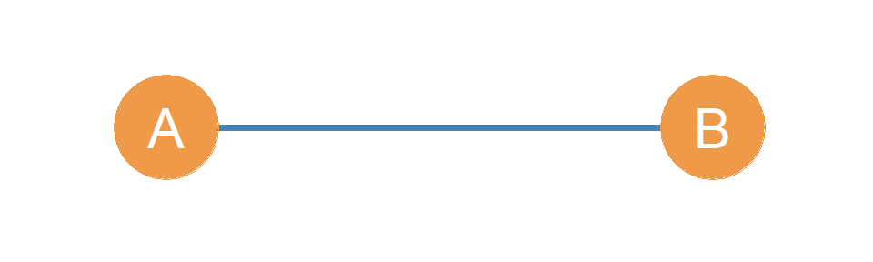
10 Dyads and Triads
10.1 Dyads
In a graph, every pair of nodes, whether joined by an edge or not, is referred to as a dyad. Essentially, a dyad is any subgraph of order two of a larger graph. Generally researchers only refer to dyads when describing features of the network, although it it important to remember that ties that do not exist, but could exist, may be socially meaningful.
Additionally, when may consider the relationship among sets of three actors, we describe this as a triad. Triads have very important sociological properties that we will explore in other lessons. Dyads, triads and larger motifs constitute the (lego-like) building blocks of social network.s For now however, the terms provide a language that we can use to describe parts of the graph.
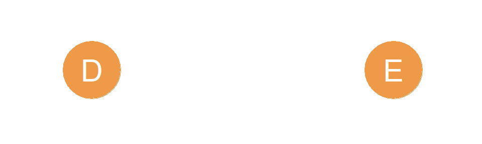
10.1.1 Types of Undirected Dyads
Using Figure 8.1 as the reference graph \((G)\), we can define a subgraph \((G')\) containing only nodes A and B. This is shown in Figure 10.1. In the same way, we could define a subgraph containing only nodes D and E. This is shown in Figure 10.2). Each figure portrays the two types of dyads that can exist in a undirected graph. Either a dyad with two nodes share an edge, or they don’t.
The dyad shown in Figure 10.1, with two nodes linked by an edge, is called a connected dyad, while the dyad shown in Figure 10.2 is called a null dyad. Since there can only be two types of dyads an undirected graph, every pair of actors is either part of a connected or a null dyad. Both types of dyads are defined by subgraphs of the same order (two), but they are different in size. The null dyad is size zero, and the connected dyad is size one.
10.1.2 Types of Directed Dyads
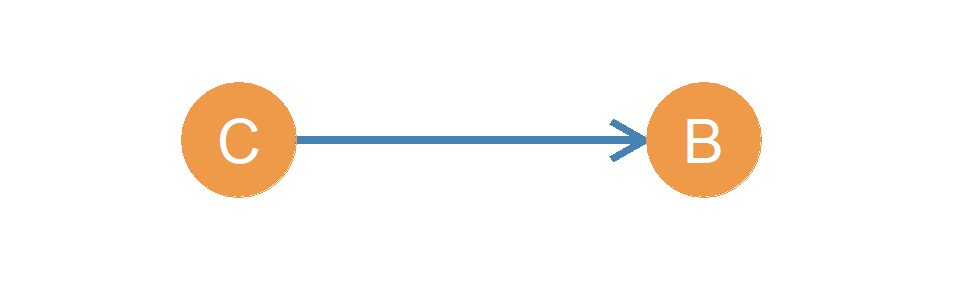
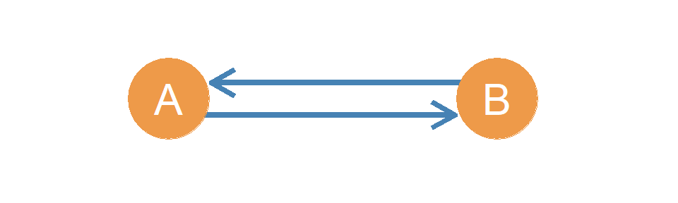
While in an undirected graph there can only be two types of dyads, in a directed graph like the one shown in Figure 8.2, there can three different kinds of dyads. The reason for this is that in a directed graph, connected dyads can be of two kinds. On the one hand, we can have a dyad like that of actors C and B in Figure 10.3, who are described as an asymmetrically connected dyad (or asymmetric dyad for short).1 This is because while C sends a tie to B, B does not send a tie back to C.
In contrast, actors A and B in Figure 8.2 can be described as a mutually connected dyad (or mutual dyad for short), their subgraph is shown in Figure 10.4. Actors A and B are part of a mutual dyad because A sends a tie to B, and B sends a tie back to A.2 Thus, in a directed graph representing a network of asymmetric ties, every pair of actors in the network can be classified as belonging to one of three types of dyads: Mutual, Asymmetric, and Null. An easy way to remember this is that this classification spells “MAN.”
It is important to keep distinct the notion of asymmetry when used to refer to types of edges in a graph, from when it is used to refer to types of dyads. For instance, a mutual dyad is composed of a pair of asymmetric edges! When used to refer to edges, the notion of asymmetry implies only directionality of the single edge, while when used to refer to dyads the notion of asymmetry implies non-reciprocity of the whole dyad.
A lot of the time we collect social network information that has a directed basis. For instance, we ask people whether the “know” someone, or whether they consider somebody a “friend.” These type of network data are called nominations, and they are very common in social network analysis. For instance may ask an individual \(E\) (let’s call her Jennifer) whether they nominate another individual \(C\) (in their school, classroom, dorm, office) as a “friend” (let’s call her Mariah), and they say “yes I know Mariah,” or “Mariah is my friend.” As with the “I don’t know her” meme,3 sometimes it happens Jennifer says they know Mariah, or “nominates” Mariah as a friend, but Mariah says they don’t know Jennifer, or fail to nominate Jennifer as a friend back! This creates a situation in which most social network data sets, end up being composed of directed dyads with asymmetric friendship or acquaintance relations, even if the researcher thought they would end up with symmetric ties (Carley and Krackhardt 1996).
10.2 Triads
10.2.1 Types of Undirected Triads
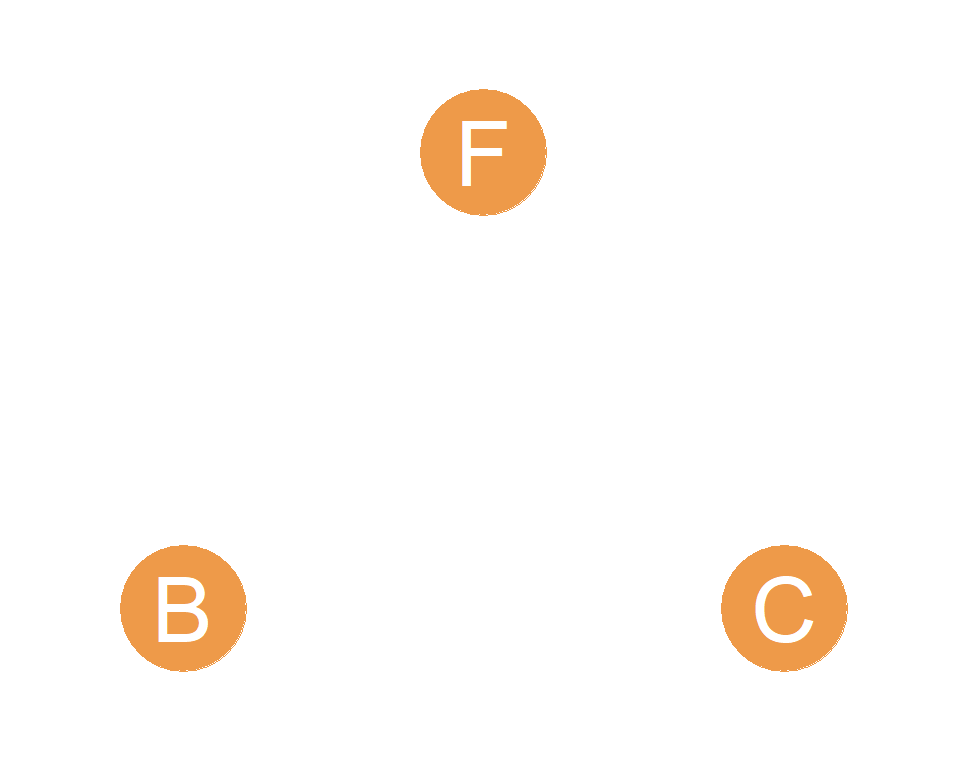
We could do the same thing we did with dyads (subgraphs of order two) with the different subgraphs of order three in an undirected graph. These are called undirected triads.
Take for instance, the subgraph defined by nodes B, C, and F in the graph shown in Figure 8.1. This is shown in Figure 10.5. It shows three people who are not connected to one another! Like strangers in a park sitting on three different benches. This is called the null triad.
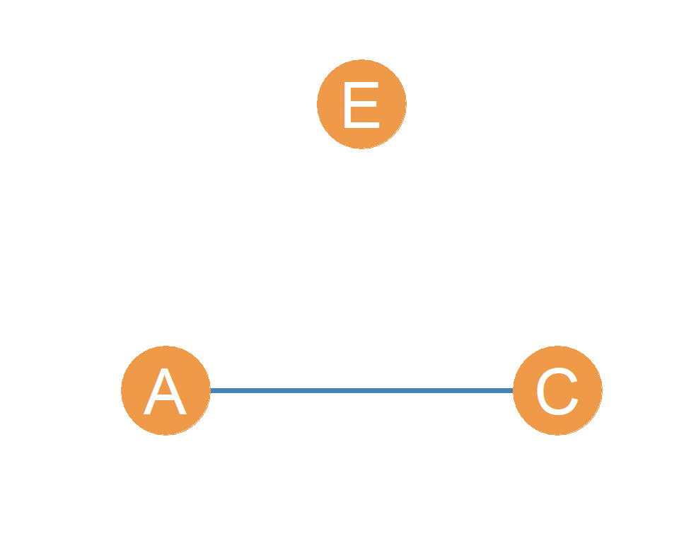
Now let’s define a subgraph using nodes A, C, and E. The resulting triad is shown in Figure 10.6. Now this looks like a pair of friends A and C, in the same room with a stranger (E) whom they are not acquainted with. You may have experienced this before at a social gathering. This is called the disconnected triad. It is disconnected, because the subgraph formed by the three nodes is disconnected, as defined earlier; there is no way that either A or C can reach E, given that E is an isolate in the subgraph.
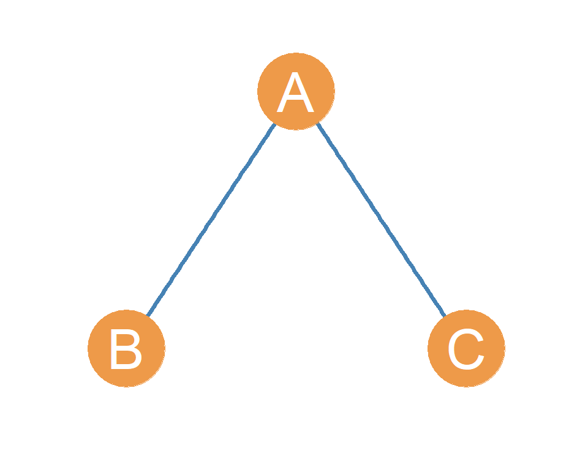
We can continue. Let’s define a subgraph from the larger graph in shown in Figure 8.1, but this time we will pick nodes A, B, and C. What comes out? This is shown in Figure 10.7. This time, there is one person, node A, who is acquainted with two other people, nodes B and C, but they don’t seem to know one another. It’s like when you have friends from work and friends from school who have never met. This is called the open triad, because even though the subgraph is connected (there are no isolate nodes like in Figure 10.6, there is a “open hole” in the triad separating nodes B and C. Perhaps A should introduce their friends to one another!
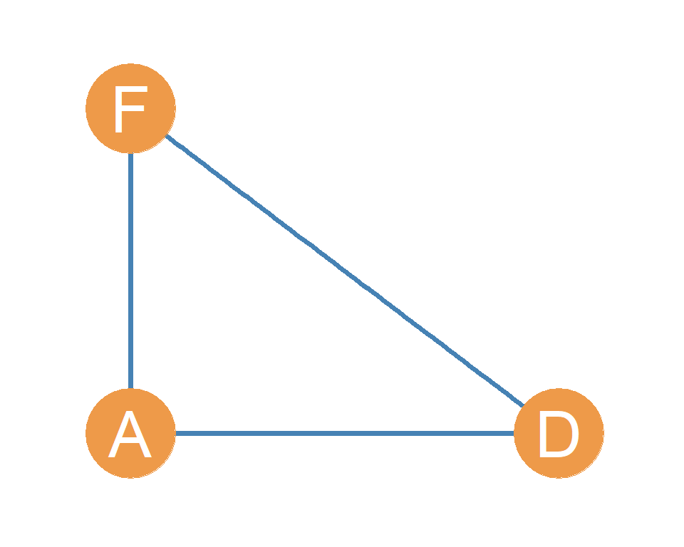
One last one. Let’s define a subgraph from Figure 8.1, but this time let’s pick nodes A, D, and F. The result is shown in Figure 10.8. Now we have three friends all of whom know one another! So there are three distinct pairs of relations in the triad: AD, AF and DF. It’s like that group of three friends that always seems to hang out together. This is called the closed triad, because there is no room to add more links to it. It is also called the closed triad because it is the configuration you get when you add a final link to the open triad (thus “closing” it).
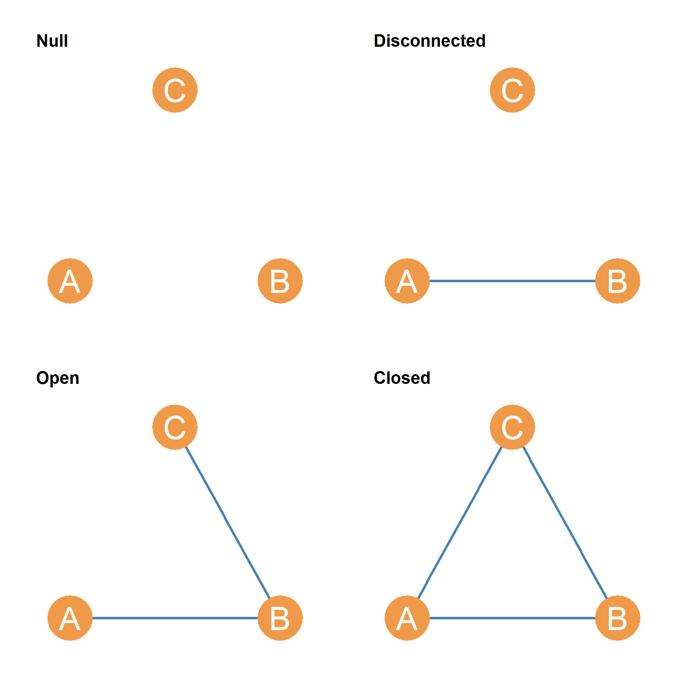
As shown in Figure 10.9, in an undirected graph, there can only be these four types of triads. So every threesome of actors is part of a null, disconnected, open, or closed triad. All four triads are subgraphs of the same order (three), but they are different in size. The null triad is size zero, the disconnected triad is size one, the open triad is size two, and the closed triad is size three.
Dyads, triads, and subgraphs of higher order (called network motifs) are the building blocks of larger network structures in society (Milo et al. 2002).
10.3 Advanced: Types of Directed Triads
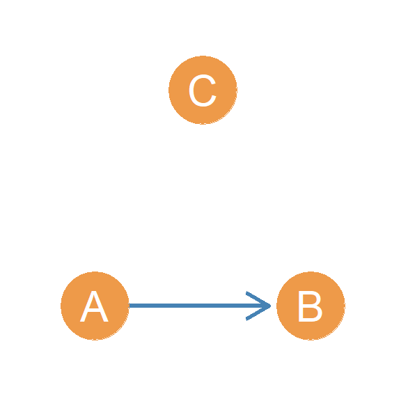
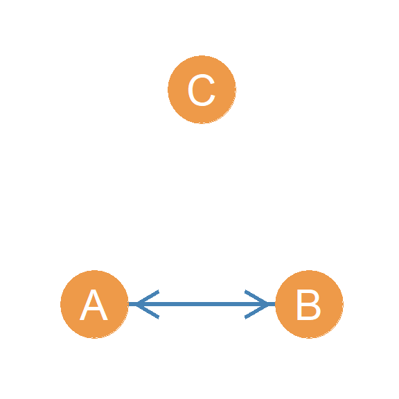
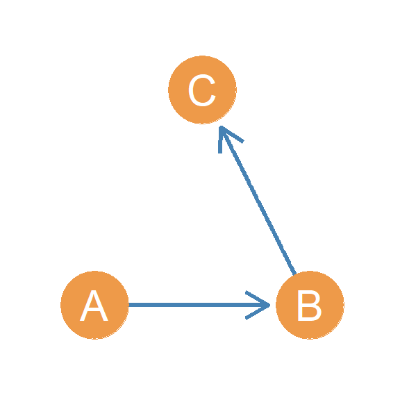
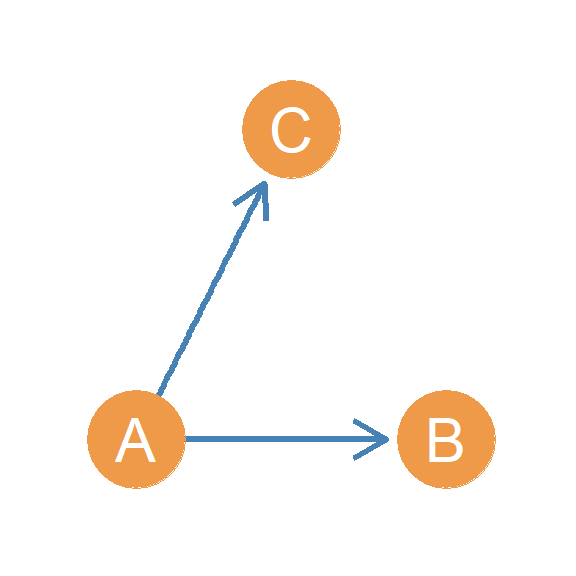
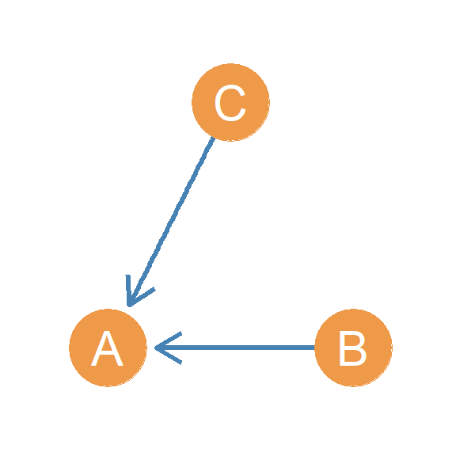
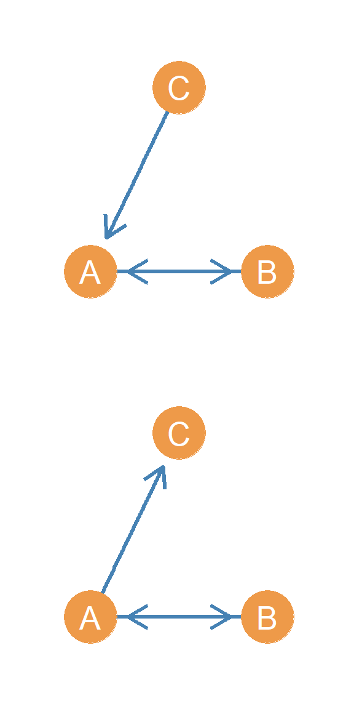
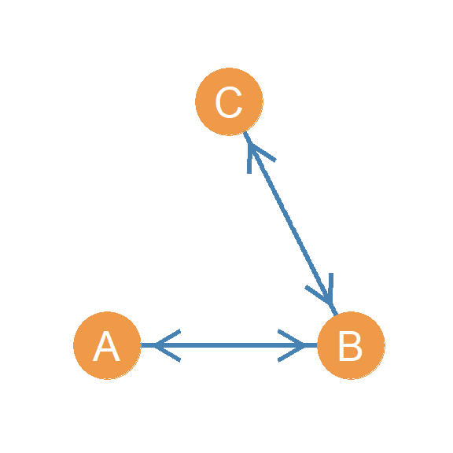
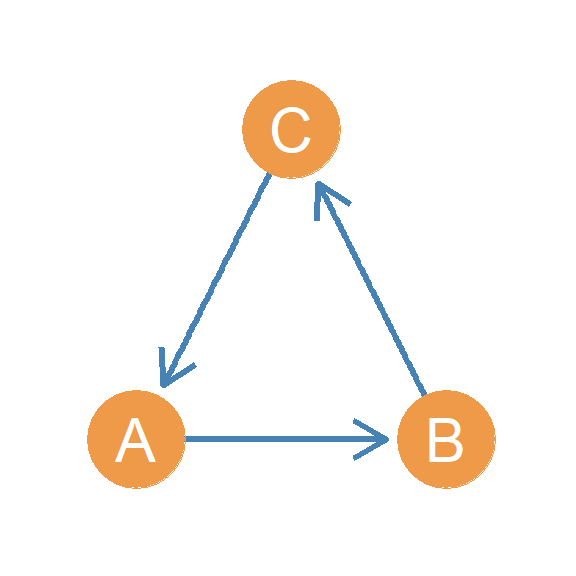
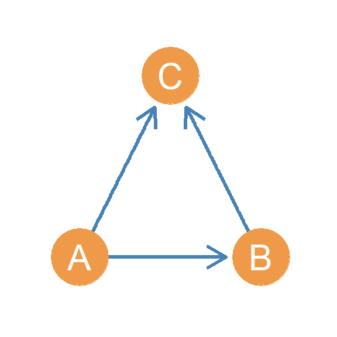
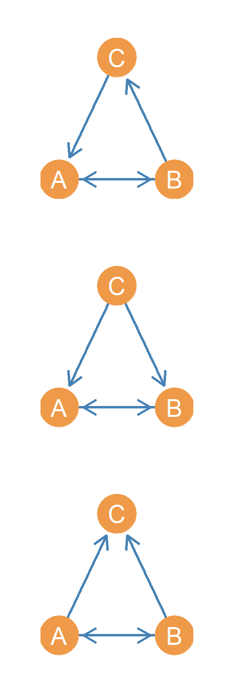
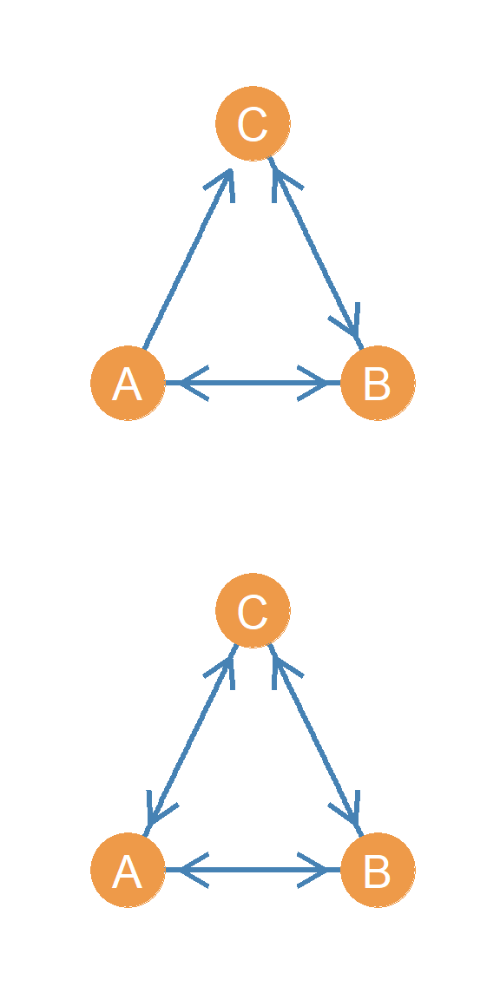
Just in the same way we can enumerate all the directed triads that exist in a directed graph, we can do the same for subgraphs of order three, namely triads. However, now that we are talking about threesomes, things get more complicated because we have a larger number of combinations to deal with. Let us go through them.
First, it is useful to think about what we are dealing with. First, with a subgraph of order three we have three “slots” in the structure to consider. Each of these slots is a directed dyad. Thus, a triad can also be thought of as a concatenation of three directed dyads. That means that in a directed dyad, each of the slots can only be in on of three states (just like regular directed dyads): It can be mutual (M), asymmetric (A), or null (N)!
10.3.1 The Null Triad
So we know that right off the bat, one of the configurations is just going to be composed of three null dyads. Let’s call it \(NNN\), and is going to look like just like the null dyad in the directed case (see Figure 10.5.
10.3.2 Disconnected Directed Triads
Another set of configurations is going to be composed disconnected directed triads that are going to feature one connected dyad and two null dyads. Let’s call them \(NNC\). However, while there was only one such configuration in the undirected triad case, there’s going to be two in the directed triad case, because there are two kinds of directed connected dyads (asymmetric and mutual). So, one of the disconnected directed triads is going to have two null dyads and one asymmetric connected dyad. It looks like Figure 10.10. The other one is going to have two null dyads and a mutual connected dyad. It’s going to look like Figure 10.11. That’s it for the two null dyad configurations. We have collected a total of three directed triadic configurations so far!
10.3.3 Open Directed Triads
Now let’s think about directed triadic configurations featuring two asymmetric directed edges and one null dyad. These are directed versions of the open triad we considered in the undirected case. Here things get a bit interesting because edge directionality generates distinct configurations even when the number of links within the triad is the same (in this case two). So let’s call this configuration set \(AAN(*)\), where the \(*\) will be substituted with a letter to distinguish between the different arrangements.
In one set up, we have a person who directs an asymmetric edge to another person, and this person directs an asymmetric edge to a third. This is called the directed line, so let’s call this triad \(NNA(L)\), where “L” stands for “Line.” It looks like Figure 10.12. Think of when someone tells you a secret and then you tell someone else.
In another set up, we have a person who directs two asymmetric edges at two people at the same time. This is called the out star, so let’ call this triad \(NNA(O)\), where “O” stands for “out-star.” It looks like Figure 10.13. Think of you sending a text to two of your friends on a groupchat.
In yet another set up, we have two people who direct two asymmetric edges to a third person at the same time. This is called (you guessed it) the in star, so let’ call this triad \(NNA(I)\), where “I” stands for “in-star.” It looks like Figure 10.14. Think of two of your friends performing an intervention on you.
With these three additional entries, our total set of directed triadic configurations has grown to six!
Now, let’s consider cases where: (a) the triad is both connected and open, and (b) there is one mutual dyad in the triad. There are two of these cases (let’s call them \(MAN1\), and \(MAN2\)). These are less interesting because only difference is whether the asymmetric edge is going in one direction or the other direction. These cases are shown in Figure 10.15.
Finally, let’s consider the case where: (a) the triad is both connected and open, and (b) there are two mutual dyad in the triad. There is only one case like this (let’s call it \(MMN\)), and is shown in Figure 10.16.
Notably, these three additional configurations brings our total to nine (with six of these being versions of open directed triads)
10.3.4 Closed Directed Triads
Now, let’s consider the cases of closed directed triads. These are triads featuring three connected dyads. Once again, there was only one option in the undirected case, but there’s a much larger number in the directed case because dyads can be connected in two ways (asymmetric and mutual). Let us take the configurations featuring three asymmetric links and called the \(AAA(*)\), where the \(*\) will be substituted with a letter to distinguish between the different arrangements.
In one setup, we have a person who directs an asymmetric edge to another person, this person directs an asymmetric edge to a third, and this third person directs an asymmetric edge back to the first person! As we will see later, this is called a cycle, so let’s call this triad \(AAA(C)\), where “C” stands for “cycle.” It looks like Figure 10.17.
In another setup, we have a person who directs two asymmetric edges to two other people, who are themselves connected by an asymmetric edge. Let’s call this triad \(AAA(I/O)\). Why this weird name? Well if you look at Figure 10.18, this triad combines both the in and out start configurations! In the Figure, node A is the out-star and node C is the in-star. Hence \(AAA(I/O)\), where “I/O” stands for “in/out.”
So these two configurations brings our total to eleven so far! We are almost getting there.
Now let’s consider directed triadic configurations that are: (a) closed and (b) feature exactly one mutual dyad. Since the triad is closed, we therefore know that the other two non-mutual dyads will be joined by an asymmetric link (no null dyads). Let’s call this generic set \(MAA(*)\) triads, where the \(*\) will be substituted with a letter to distinguish between the different arrangements.
Let’s ignore the mutual dyad and focus on the nodes joined by asymmetric links (\(AA\)). We know from our consideration of open triads containing asymmetric links (Figure 10.12, Figure 10.13, and Figure 10.14 above) that there are only three ways nodes in a triad can be connected via asymmetric links: 1) the line, 2), the out-star, and the in-star. So that’s exactly how many triads of these type are there. We can call them \(MAA(L)\), \(MAA(O)\), and \(MM(I)\) and they are shown in Figure 10.19.
These three additional configurations bring our total number of directed triadic configurations to fourteen! Are we done counting directed triad types?
We aren’t. We still have to consider a (final) set of triadic configurations, namely, closed triads containing at least two mutual dyads. Now, since these triads will all have two mutuals and are closed, their only distinguishing feature will be the nature of the third connected dyad. Since connected dyads can only take on of two states (Asymmetric or Mutual), then we know there will also be two subtypes: \(MMA\) (two mutual dyads with a third asymmetric dyad), and \(MMM\) (the triad with all mutual dyads!). These are shown in Figure 10.20. So, with these two triads, the true (and final) number of directed triadic configurations is sixteen!
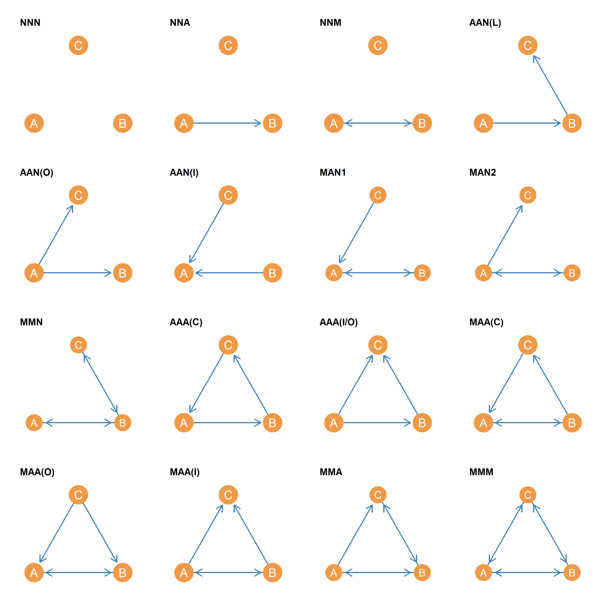
The full sixteen-member set of possible directed triadic subgraphs is shown in Figure 10.21.
References
Carley, Kathleen M, and David Krackhardt. 1996. “Cognitive Inconsistencies and Non-Symmetric Friendship.” Social Networks 18 (1): 1–27.
Milo, Ron, Shai Shen-Orr, Shalev Itzkovitz, Nadav Kashtan, Dmitri Chklovskii, and Uri Alon. 2002. “Network Motifs: Simple Building Blocks of Complex Networks.” Science 298 (5594): 824–27.